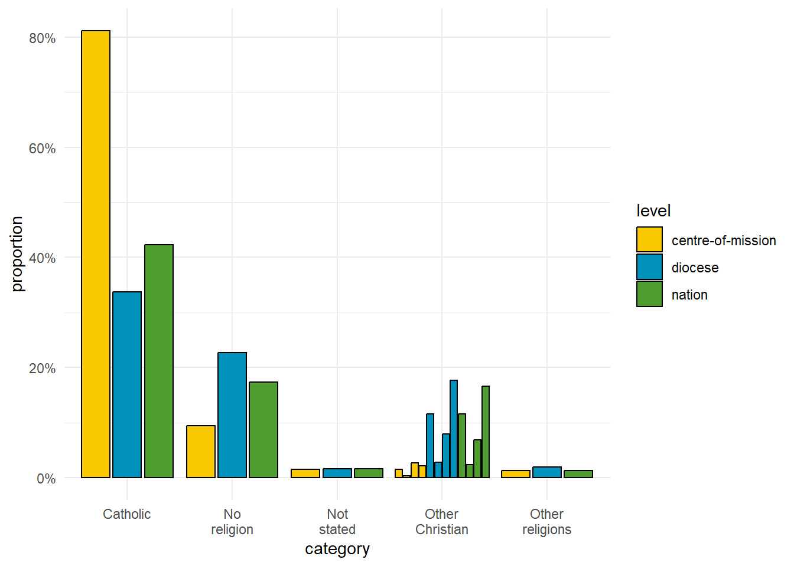
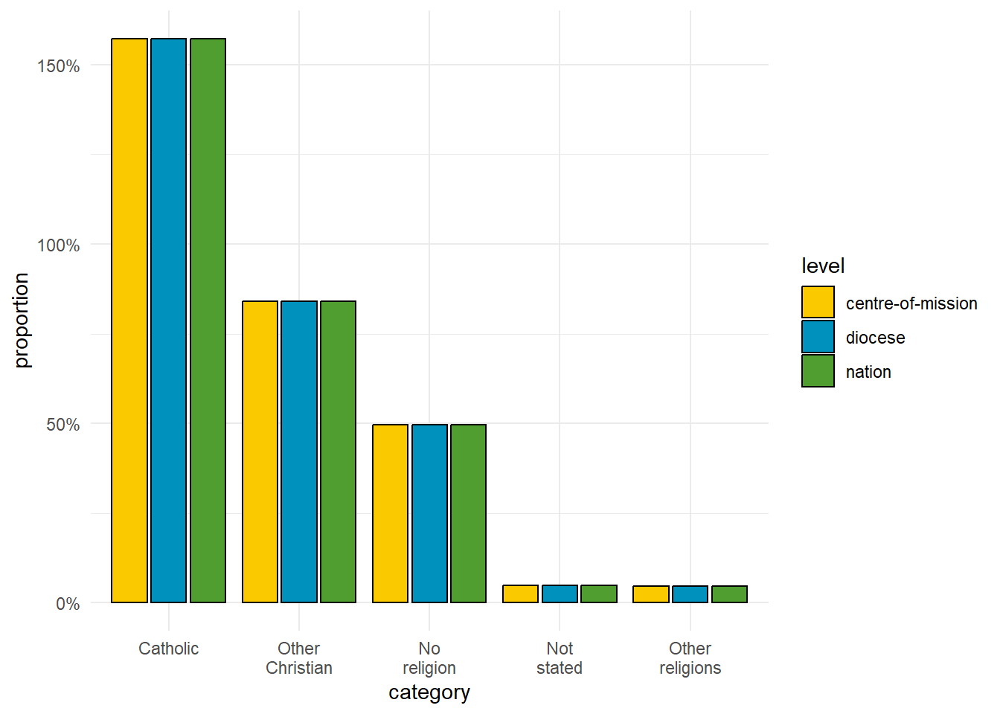

library(fs)
library(here)
library(dplyr)
library(purrr)
library(forcats)
library(ggplot2)
library(carutools)
library(scales)Group and order factors
Libraries
Read data
split <- readRDS(here("data", "northern-ireland_split-formatted.RDS"))
names(split)[1] "age-five-year" "age-single-year" "ethnicity"
[4] "ethnicity-harmonised" "general-health" "hours-worked"
[7] "household-composition" "household-deprivation" "religion" Split data into CoM
This will allow us to order the category factors differently for each CoM as necessary
split <- map(split,
\(x){
out <- group_by(x, com)
list_names <- group_keys(out)[["com"]]
out <-
group_split(out) |>
as.list() |>
set_names(list_names)
return(out)
})
lengths(split) age-five-year age-single-year ethnicity
2 2 2
ethnicity-harmonised general-health hours-worked
2 2 2
household-composition household-deprivation religion
2 2 2 Helpers
quick_plot <- function(x, at = 1){
ggplot(split[[x]][[at]]) +
geom_col(aes(x = category, y = proportion, fill = level),
colour = "black", position = "dodge2") +
ca_scale_fill_discrete() +
scale_y_continuous(labels = percent) +
theme_minimal()
}
order_by_level <- function(x, level = "centre-of-mission"){
com_rows <- x[["level"]] == "centre-of-mission"
props <- x[["proportion"]][com_rows]
good_levels <- x[["category"]][com_rows][order(props, decreasing = TRUE)]
out <- mutate(x, category = factor(category, levels = good_levels))
return(out)
}
lump_category <- function(x, n){
out <-
mutate(x, category = fct_lump_n(category, n, w = proportion)) |>
group_by(across(c(-proportion, -count))) |>
summarise(across(c(proportion, count), sum), .groups = "drop")
return(out)
}
unduplicate_levels <- function(x){
reframe(x,
across(
everything(),
\(y){
if(is.character(y)) out <- unique(y)
else if(is.numeric(y)) out <- sum(y)
out
}),
.by = category
) |>
group_by(statistic, level) |>
mutate(proportion = count / sum(count))
}Group and order ethnicity
quick_plot("ethnicity")
split[["ethnicity"]] <- map(split[["ethnicity"]],
\(x){
unduplicate_levels(x) |>
order_by_level() |>
lump_category(5)
})
quick_plot("ethnicity")
Group and order religion
quick_plot("religion")
split[["religion"]] <-
map(split[["religion"]],
\(x) {
unduplicate_levels(x) |>
order_by_level(x) |>
lump_category(5)
})
quick_plot("religion")
Save
saveRDS(split, here("data", "split-formatted-ordered-grouped.RDS"))